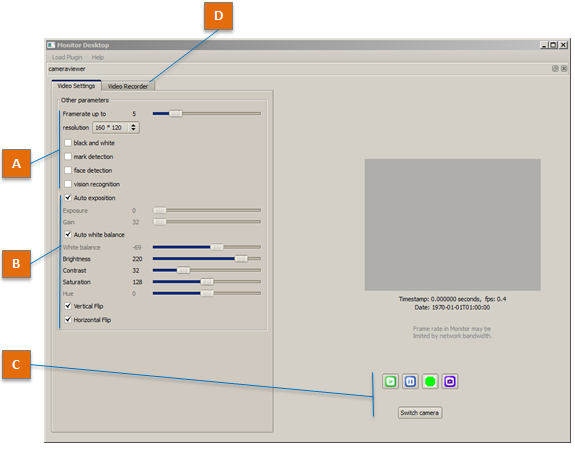

Camera viewer¶
See also
The Camera viewer allows you to:
- configure robot cameras,
- display what they see,
- take pictures or
- record videos.
To load the Camera viewer plugin into Monitor, see How to launch a Monitor plugin.
Once loaded, the following panel is displayed:
{kind=link}
| Part | Name | Description |
|---|---|---|
| A | Viewer settings | The following settings have an impact limited to the display on Camera viewer, and has no impact on video recording: whatever the settings, videos are recorded in QVGA (320*240) at 15 fps, with MJPG compression.
|
| B | Camera settings | The following settings impact video recording and all the modules which use the cameras.
|
| C | Action Buttons | Play starts retrieving and displaying images from your robot in the video widget. Pause pauses video display and stops requesting images. Record starts recording a video. stop recording the video and prompts for a destination file. Snapshot takes three pictures (a,b,c) of what the robot sees. The files will be saved to: /home/nao/.local/share/naoqi/vision/{timestamp}{a,b,c}.jpg Switch camera: switches between head’s front and bottom cameras. |
| D | Video Recorder tab | This panel allows you to define the file name used to store the video on the robot. It also displays information about the last recorded video file. |